Мысли в разных местах
Заметки в одном приложении, задачи в другом, планы вообще в голове. К вечеру половина забывается, а вечером приходит идея — и записать её уже негде.
Хэзэнштейн — место, где мысли превращаются в порядок: заметки, задачи, календарь, желания и карта твоих мыслей. Пиши как думаешь — остальное сделает ИИ.
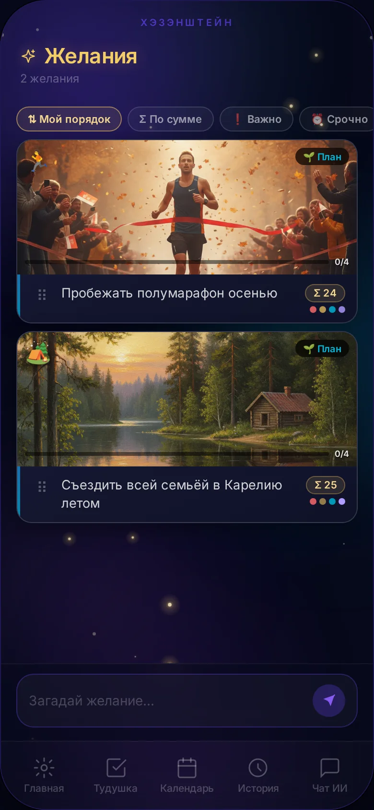
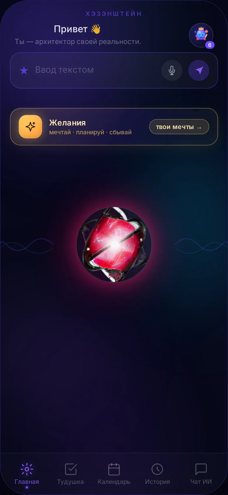
Мысли, дела и мечты живут в разных местах — и поэтому теряются.
Заметки в одном приложении, задачи в другом, планы вообще в голове. К вечеру половина забывается, а вечером приходит идея — и записать её уже негде.
В обычных тудушках дела копятся десятками: нет приоритета, взгляд разбегается, хочется закрыть и забыть. Сделанное тонет в несделанном.
Желания живут годами, потому что непонятно, с чего начать. Мечта так и остаётся строчкой, до которой руки никогда не доходят.
Хэзэнштейн собран ровно под это: одна строка ввода — и ИИ раскладывает всё по местам.
Работает и с голоса: зажми микрофон и просто говори.
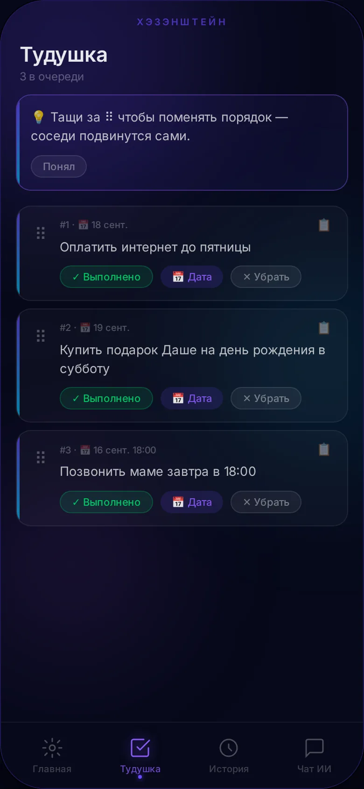
Шесть инструментов, которые работают как один.
Одна задача наверху, остальные ждут. Порядок меняется перетаскиванием — соседи подвинуваются сами.
Месяц и неделя. Задачи раскидываются перетаскиванием или конвейером «Раскидать» — по дням за один тап.
Поиск, теги, фильтры «сегодня / 7 дней / месяц». Выполненное — отдельно. Ничего не теряется никогда.
Большая цель превращается в шаги-задачи с общим тегом. У каждого желания — свой чат с ИИ-наставниками.
Облако слов и граф-сферы с семантическим зумом. Связи между записями ИИ находит сам.
Помнит все записи и отвечает на вопросы о твоих планах: «что у меня на неделю?» — и получишь сводку.
Плюс: итог дня в 22:00 · облако слов · напоминания · PWA на телефон без стор и аккаунтов.
Отдельный экран для того, что действительно хочется. Здесь желание — не строчка в списке, а маршрут: иконка, категория, шаги и наставники.
Пишешь «съездить в Карелию» — а ИИ уже собрал карточку мечты: подобрал иконку и категорию, придумал тег, написал промпт для обложки и разложил путь на четыре майлстоуна. Тебе остаётся нажать «Сохранить».
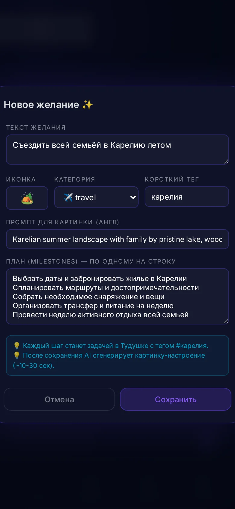
Каждое желание — карточка с обложкой, категорией и прогрессом шагов. Открыл список — сразу видно, что движется, а что стоит. Иконки для карточек ИИ рисует и подбирает сам.
У каждого желания есть свой чат с четырьмя наставниками: Практик даст план, Скептик найдёт слабые места, Мечтатель вернёт мотивацию, Философ посмотрит со стороны. Спроси — и получишь конкретный первый шаг.
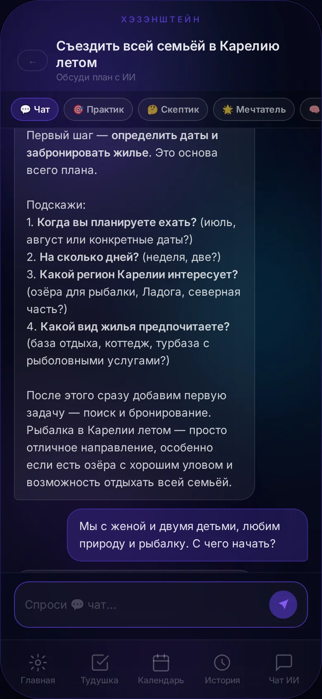
Шаги из желания автоматически становятся задачами в тудушке с общим тегом. Мечта перестаёт быть мечтой — она начинает жить в твоём расписании, рядом с обычными делами.
#карелия — все шаги желания собраны одним тегом
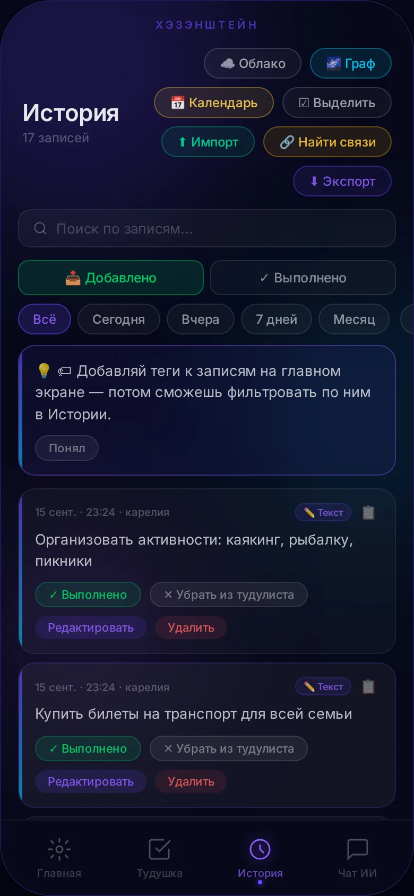
На главном экране всегда ровно одна задача.
Очередь вместо кладбища дел: ты видишь то, что нужно сделать сейчас.
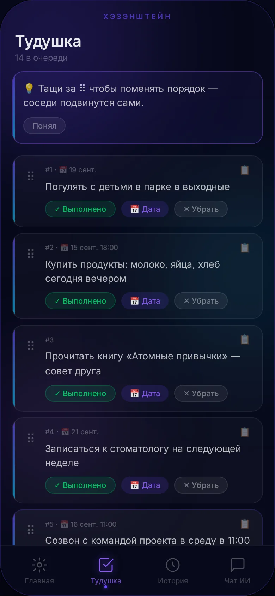
Вид месяца и недели · счётчик задач на каждом дне.
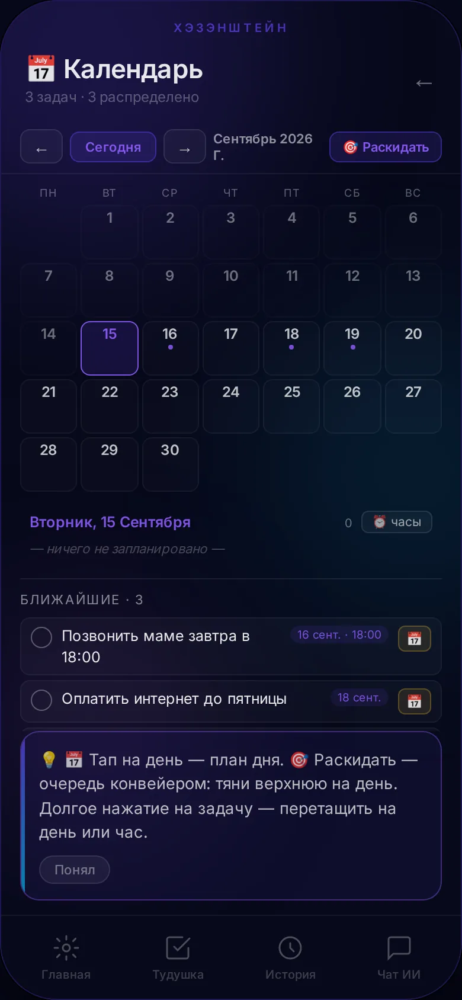
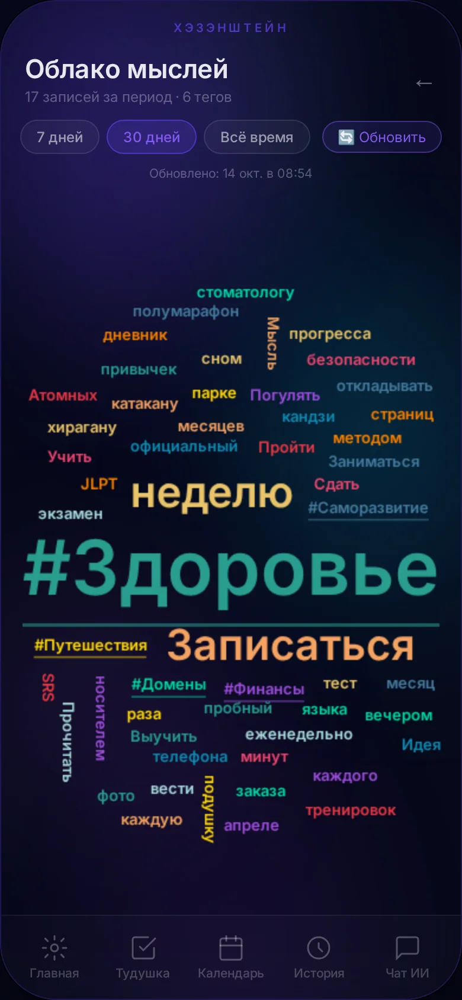
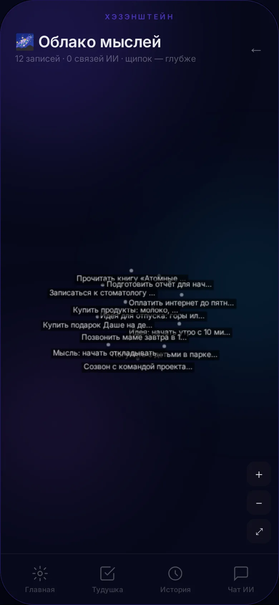
Что занимает мысли чаще всего — то и крупнее. Сразу видно, куда уходит внимание.
Записи группируются в сферы жизни; чем сильнее приближаешь — тем больше деталей проявляется.
Связи между записями ИИ находит сам — достаточно нажать «Найти связи».
Общий чат помнит все твои записи: спроси «что у меня по планам на неделю» — получишь сводку по заметкам, задачам и желаниям. Никаких ручных отчётов: ИИ собирает картину из того, что ты уже написал.
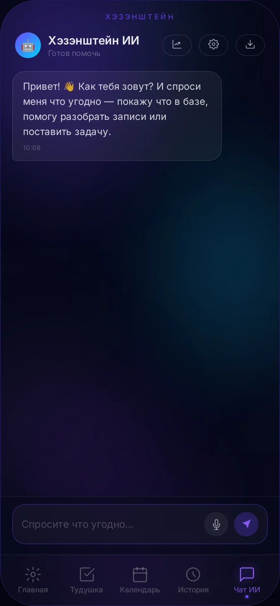
Чего нет в обычных приложениях — и что уже работает здесь.
| Возможность | Обычные заметки и тудушки | Хэзэнштейн |
|---|---|---|
| ИИ разбирает строку: задача это, заметка, дата? | Всё руками | Сам, за секунды |
| Умные даты из текста | «Выбери в календаре» | «Завтра», «до пятницы» понимаются сами |
| Фокус дня на главном экране | Длинный список | Одна задача, свайп — следующая |
| Желание превращается в задачи | Отдельное приложение | План + тег + тудушка |
| Карта мыслей и сферы жизни | Нет | Облако + граф с зумом |
| Итог дня в 22:00 | Нет | Сделано, деньги, настроение |
| Установка | Стор + аккаунты | PWA: браузер, офлайн, анонимно |
Это личное приложение одного человека — поэтому в нём нет ничего лишнего.
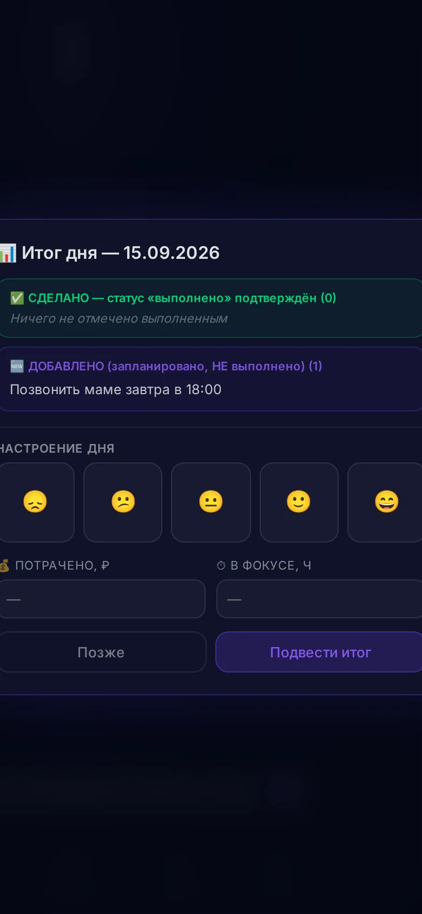
Открывается в браузере · ставится на телефон за 10 секунд · вход анонимный · данные только твои